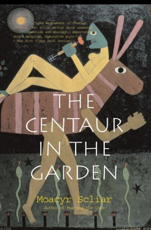
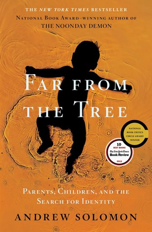
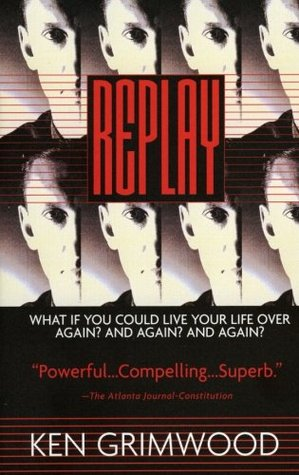

Eduardo Insaurriaga
Designer
I work with a holistic view and empathy for the user. I believe every detail is important, and teamwork is the best way to improve people's lives. Over 16 years of experience working in UX and digital products.
Check out my PortfolioMy favorite TV Shows
 |
Breaking Bad (2008)A high school chemistry teacher diagnosed with inoperable lung cancer turns to manufacturing and selling methamphetamine in order to secure his family's future. |
 |
Black Mirror (2011)An anthology series exploring a twisted, high-tech world where humanity's greatest innovations and darkest instincts collide. |
 |
Mr. Robot (2015)Elliot, a brilliant but highly unstable young cyber-security engineer and vigilante hacker, becomes a key figure in a complex game of global dominance when he and his shadowy allies try to take down the corrupt corporation he works for. |
My favorite Books
|  |
The Centaur in the Garden, by Moacyr ScliarGuedali Tartakovsky celebrates his 38th birthday. It is only now that Guedali is able to revel in memories of glorious times past. Born a centaur, Guedali describes his family's flight from Russia to Brazil at the turn of the century, the shock of his birth, the loving care of his parents and his sisters, the mounting resentment of his brother, and his extraordinary experiences being raised as a Jew. He meets his life companion--a centauress. Together they embark on a journey to create a place where the human and the wild can live in peaceful coexistence. |
|  |
Far from the Tree, by Andrew SolomonBeing exceptional is at the core of the human condition—that difference is what unites us. He writes about families coping with deafness, dwarfism, Down's syndrome, autism, schizophrenia, or multiple severe disabilities; with children who are prodigies, who are conceived in rape, who become criminals, who are transgender. While each of these characteristics is potentially isolating, the experience of difference within families is universal, with triumphs of love over prejudice in every chapter. |
|  |
Replay, by Ken GrimwoodJeff Winston was 43 and trapped in a tepid marriage and a dead-end job, waiting for that time when he could be truly happy, when he died. And when he woke and he was 18 again, with all his memories of the next 25 years intact. He could live his life again, avoiding the mistakes, making money from his knowledge of the future, seeking happiness. Until he dies at 43 and wakes up back in college again... |
About this page
This page has been coded during the FullStack program @LeWagon.
That was probably the best experience of my life (after becoming a father).